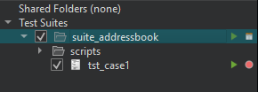
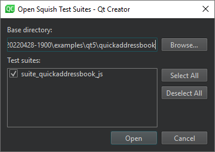
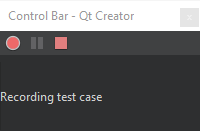
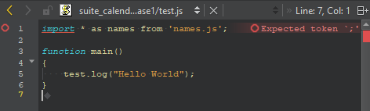
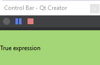
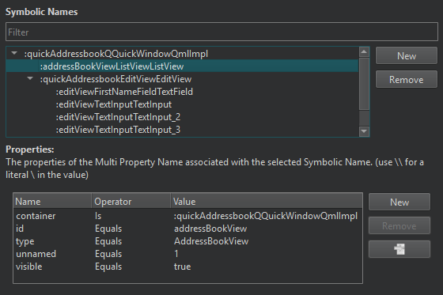
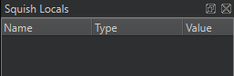
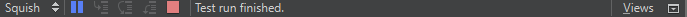

Manage Squish test suites and cases
Manage Squish test suites and cases in the Squish sidebar view.

To show existing test suites in Test Suites, select Open Squish Suites in the context menu.

To open the Squish Test Suite wizard for creating a new test suite, select Create New Test Suite in the context menu.
To add a test case to a test suite, select it and then select Add New Test Case in the context menu.
To close all test suites, select Close All Test Suites in the context menu.
To add a shared folder to Shared Folders, select Add Shared Folder in the context menu. To remove all shared folders, select Remove All Shared Folders.
Double-click a test suite in Test Suites to open the suite.conf configuration file for editing.
Record test cases
Squish records tests using the scripting language that you specified for the test suite. Recordings are made into existing test cases.
In Test Suites, select (Record Test Case) next to the test case name. The application under test (AUT) that you selected for the test suite is displayed and you can start recording the test case.

When you are done, select (Stop) in Control Bar.
Edit recorded test scripts or copy parts of them into manually created test scripts.

Run test suites
Run a recorded test case to have Squish repeat all the actions that you applied when recording the test, but without the pauses that humans are prone to but which computers don't need. To run a test case, select (Run) next to the test case in Test Suites.

While the test is running, you can view test results as well as interrupt and stop tests in the Control Bar.
Map symbolic names
When Squish records a test, it uses symbolic names to identify the UI elements. Symbolic names are stored in an object map that can be either text-based or script-based. Text-based symbolic names are plain strings starting with a colon (:), whereas script-based symbolic names are script variables.
Squish generates symbolic names programmatically, but you can use them in hand-written code, or when you edit test cases or use extracts from recorded test cases.
Symbolic names have one major advantage over real names: if a property that a real name depends on changes in the AUT, the real name becomes invalid, and you must update all occurrences of it in test scripts. When using symbolic names, you only need to update the real name in the object map. You do not need to make any changes to the tests.
To edit the object map of a test suite, select (Object Map) next to the test suite in Test Suites.

You can filter the symbolic names in the Symbolic Names view. To edit a symbolic name or the names or values of its properties, double-click the name or value in the view and enter a new one.
To add a new symbolic name, select New. Double-click the placeholder for the name and enter a new name. Then select New next to Properties to enter properties for the symbolic name.
To remove the selected symbolic name or property, select Remove.
To jump to the symbolic name associated to the selected property, select .
Inspect local variables
If you set breakpoints in the test code before running the test, the test execution is automatically interrupted when a breakpoint is hit. You can inspect the contents of local variables in the Squish Locals view.

Use the Step Into, Step Over, and Step Out buttons in the Squish debugging view to step through the code.

See also Connect to Squish Server, Create Squish test suites, Enable and disable plugins, Select Squish AUTs, and Squish.